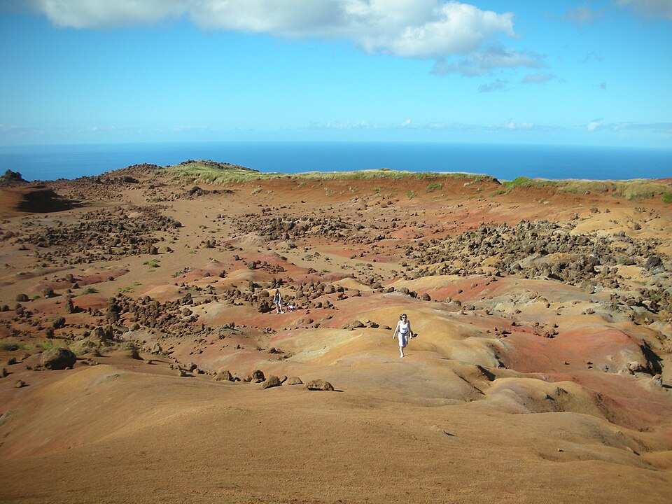

Keahiakawelo
Place: Keahiakawelo (Garden of the Gods), Lānaʻi
Type: Wahi pana / geological landscape / cultural site
Namesake: Keahiakawelo (“the fire of Kawelo”), named for a legendary Hawaiian kahuna whose sacred fire is associated with the landscape
Story it tells: How a windswept landscape of red earth and unusual rock formations preserves the Hawaiian tradition of Kawelo's spiritual conflict with a Molokaʻi priest, while its modern English nickname, Garden of the Gods, reflects a much later interpretation of the site.

Keahiakawelo, a windswept plateau in northwestern Lānaʻi, takes its name from a Hawaiian tradition of spiritual conflict between two powerful kahuna. According to moʻolelo, Kawelo of Lānaʻi faced Lanikaula, a priest on neighboring Molokaʻi, in a contest of supernatural power across the Kalohi Channel. Kawelo built a great fire, burning the vegetation around him to sustain the flames and overcome his rival. The name Keahiakawelo, meaning "the fire of Kawelo," preserves the memory of this conflict, while the barren landscape became part of the story demonstrating the consequences the land endured in this spiritual struggle.
Today, Keahiakawelo is known for its striking landscape of reddish earth, scattered boulders, and unusual rock formations shaped by weathering and erosion. Its exposed terrain stands in sharp contrast to the greener uplands of Lānaʻi and the deep blue ocean you see further down the hills. Although Hawaiian tradition attributes the landscape's barrenness to Kawelo's fire, its present appearance also reflects natural geological processes and centuries of environmental change. Introduced grazing animals, particularly sheep and goats, damaged vegetation and accelerated soil erosion across much of Lānaʻi, leaving significant portions of the island's dryland ecosystem severely degraded. Wind and rain continued to carve the exposed terrain, producing the dramatic landscape we see today.
Keahiakawelo is also widely known by its English nickname, the Garden of the Gods, a name that became popular in the early twentieth century. The nickname evokes the area's otherworldly collection of rocks and boulders, resembling a place arranged by supernatural hands. Unlike the Hawaiian name, however, Garden of the Gods does not preserve the traditional story of Kawelo and Lanikaula. Today, the English name is commonly used in visitor guides and tourism materials, while Keahiakawelo carries the older cultural meaning of the place. Together, the two names illustrate how a single landscape can be understood through very different histories: one rooted in Hawaiian moʻolelo and the other in the visual interpretations and marketing names used by later visitors.